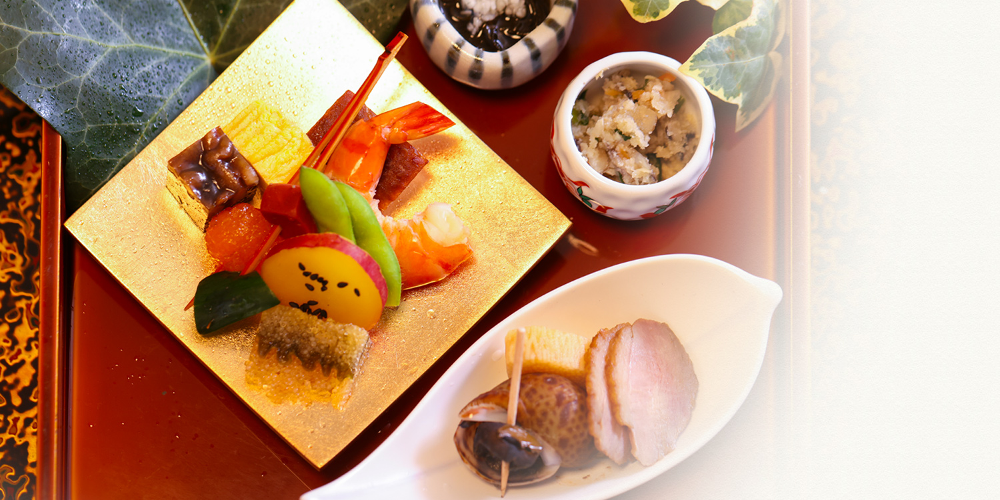

花咲の食



Eat in Kyoto's gastronomic dishes in a quiet space
さりげなく丹念な仕事を重ねた
京都の季節を現す京懐石
静寂の京町家で舌鼓
古都の面影を色濃く残す、祇園・宮川町。
宮川町通りは古式ゆかしい有名寺院や
数寄屋風の風情ある京町家などが居並び、
江戸の頃より長きに渡り花街として繁栄。
京都の伝統的な街並みが今も息づき、
豊かな歴史と共に美しい景観を創り出しております。
賑やかな四条河原町と華やかな祇園のほど近く、
遙か昔へ巻き戻ったような花街に佇む京町家で、
京のうまいもんを織り込んだ丹精込めた京懐石を
ゆったりとお楽しみいただけるように。
職人たちが譲れない味と感性に磨きをかけ、
ええ素材を、真っ当に、美味しく。
口の肥えた祇園の粋人に選ばれ続ける、花咲・宮川町店。
当店がお客様にとって、旅のひとときの寛ぎの場、
また特別なおもてなしの場になれば幸いです。
Chef's mind to put in Kyoto cuisine
京料理に込める
職人の技と心
滝沢馬琴の小説に曰く、
「京にて味よきもの 麩 湯葉 芋 水菜 うどん のみ」
のみ……とは大げさかも知れませんが、
多くの方々がこれらを京都の美味として思い浮かべることでしょう。
花咲でお出しするのは、そんな京都のおいしいものを中心とした京料理懐石。
和食の基本に忠実に、旬の食材に手間暇かけて、
月毎に代わる季節の献立を提供いたします。
素材の繊細な味が生きる、はんなり優しくも濃潤な出汁の味わいと、
見目麗しく丹精込めた会席膳をどうぞお愉しみください。


Seasonal ingredients 旬の食材
春Spring
- 筍
- 山菜
- うど
- 真鯛
- 細魚
- さわら
- いいだこ
夏Summer
- 賀茂茄子
- 万願寺唐辛子
- 鱧
- 太刀魚
- 栄螺
- 白烏賊
- 鮎
秋Autumn
- 松茸
- 九条ねぎ
- 栗
- 甘鯛
- 笹鰈
- あおり烏賊
- 子持ち鮎
冬Winter
- 蕪
- 蟹
- 河豚
- 平目
- 鰤
- 牡蠣
- 鯖
Traditional vegetables grown in Kyoto 京野菜
賀茂茄子、万願寺唐辛子、伏見とうがらし、えびいも、堀川ごぼう、
聖護院かぶ、京たけのこ、京みょうが、みず菜、壬生菜など……
京都府内で生産され、明治維新以前からの長き歴史に磨かれ、
栽培または種が保存されている品目、などの条件を満たしたものが、
「京の伝統野菜」と定められています。
花咲では、そんな京野菜を季節に応じて厳選。
独特の形や瑞々しくたおやかな旬味を月毎の京懐石に仕立て、
京料理に慣れ親しんだ方もお愉しみ頂ける趣向を凝らしております。


Tradition and culture taste, Kyoto beef 京都牛
丹波牛の流れを汲み、豊かな京都の自然と永きに亘る農家の匠の技で、優れた肉質に育て上げられた伝統と文化の味「京都牛」。
それは永きに亘り、旨いもんに恵まれた京都の食通に愛される逸品。
艶やかな肉色、きめ細かな脂と甘美な味わい、繊細で上品な舌触り。
京の食文化を語る上で欠かせない、紛れもない「最高級和牛」です。
花咲では、京会席ではステーキなどで……
お鍋では京風のすきやきやしゃぶしゃぶでお召し上がり頂けます。


Delicious and fresh fish 鮮魚
春は細魚、真鯛、めばる。夏は鱧、太刀魚、栄螺、白烏賊、鰻。
秋は甘鯛、笹鰈、あおり烏賊。冬は蟹、河豚、平目、鰤、牡蠣。
毎日市場へと出向き、その時一番脂の乗った良質な鮮魚を目利きし、
お刺身、炭火焼き、煮魚、天ぷらなど、素材の旨味を最高に引き出す
手間を惜しまない最高の調理法でご提供いたします。
品質にも仕事にも一切の妥協をせず、お客さまの満足のために。
京料理の真髄に触れる花咲の魚料理をぜひご賞味ください。


Famous sake in Kyoto 京都の酒
京都は日本有数の酒処で、古来より独自の日本酒文化がございます。
また、桃山丘陵を源泉とした水や気候風土に恵まれており、
伏見・洛中ほかに、今も多数の老舗酒蔵が軒を連ねます。
特に伏見は、軽やかな飲み口の「女酒」が多いと言われます。
花咲では、洛中最古の蔵元の酒や、伏見の名だたる酒蔵の酒など、
日本酒好きでなくとも思わず盃がすすむ銘酒を取り揃えております。
選びぬいた京の酒と共に、端正な京料理をお愉しみください。